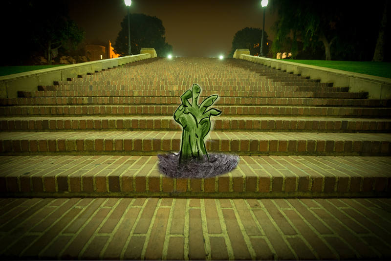
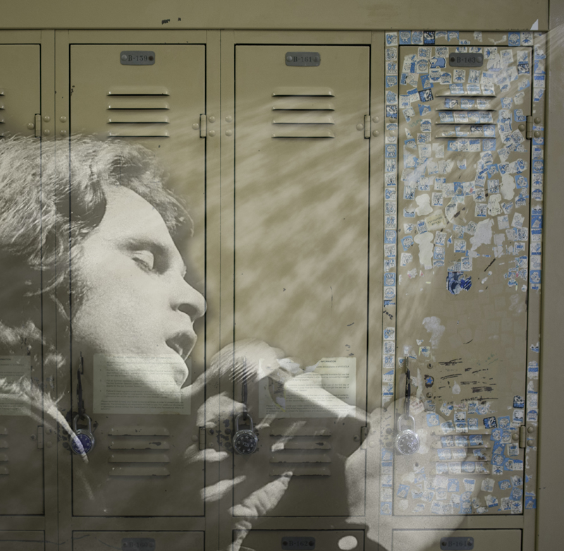
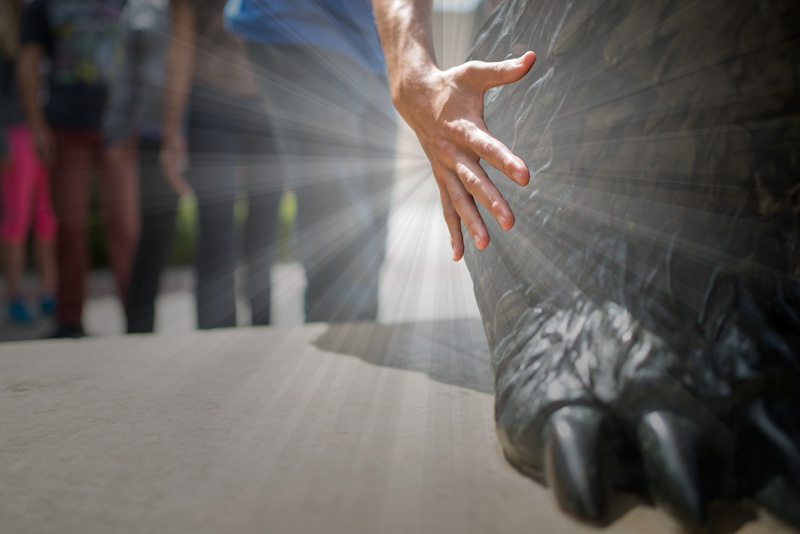
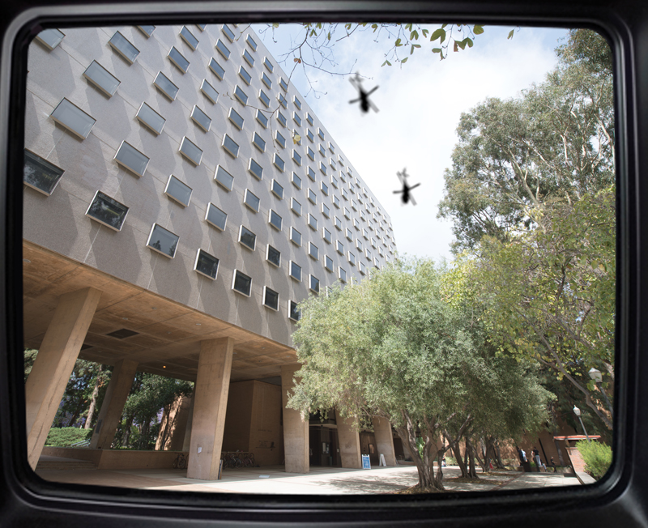
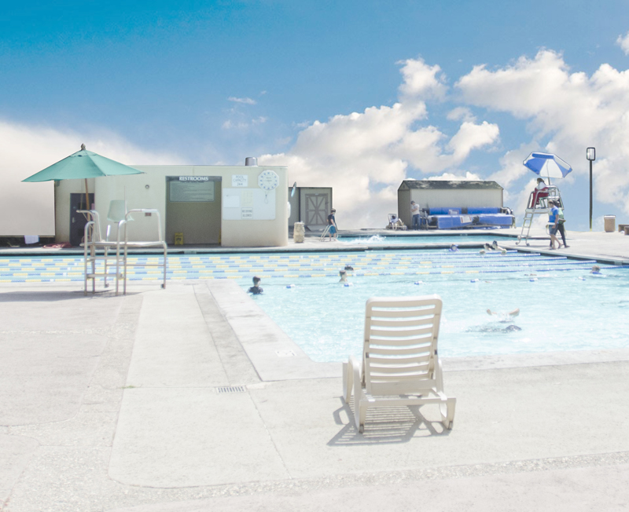

Bringing the Legends to Life
Janss Steps
The iconic Janss Steps hides a dark secret. After a feud over the design of the steps, one of the late Janss brothers requested that his body be buried underneath the sixth step to prevent his brother from removing the stairs. Since then, stepping on the sixth step has been said to bring bad luck. Decades later, on an eerie summer night, the hand of that same Janss brother pierces through the sixth step.

Jim Morrison’s Locker
Back in the ’60s, when The Doors frontman Jim Morrison attended UCLA, he used a locker on the fourth floor of the Math Sciences Building. Between classes, Mor- rison had a habit of licking LSD-laced stamps and sticking them on the front of his locker. Students have reported hearing the ghostly sound of Morrison’s voice echoing through the halls of Math Sciences late at night.

Bruin Paw
Years ago, a superstitious student found himself in an unfortunate situation: He woke up two hours late to a final for a crucial class. Forgetting his lucky rabbit’s foot in a hurry, the student instead decided to rub the Bruin statue’s paw for good luck. The student aced his final and went on to become an academic urban legend. Nowadays, desperate students line up on Bruin Walk during finals week in order to receive the paw’s good grace.

Bunche Hall
The California Highway Patrol began noticing an increase in motor accidents after Bunche Hall was constructed. After much investigation, the spike in collisions was attributed to the reflections of sunlight onto the 405 from the building’s windows. To remedy the situation, UCLA rented helicopters to physically rotate the Bunche Hall. This architectural feat is documented on The History Channel’s Modern Marvels.
